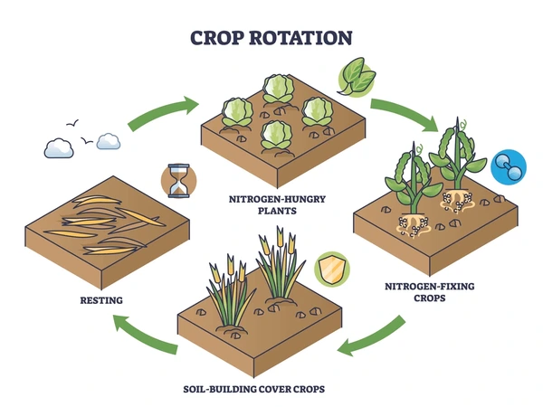
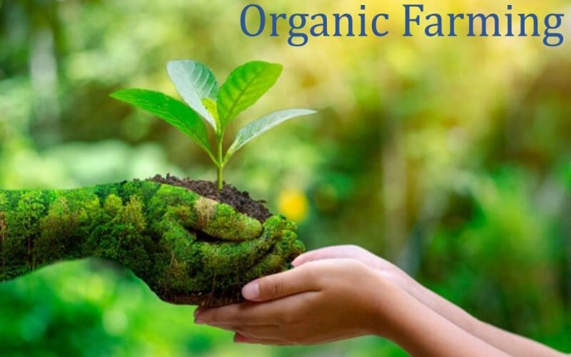
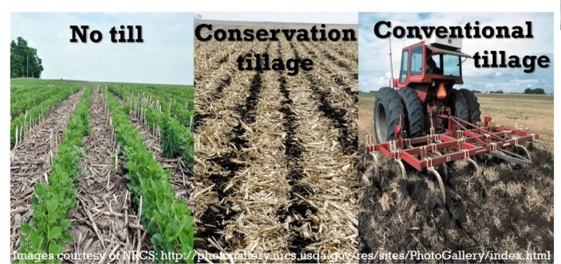
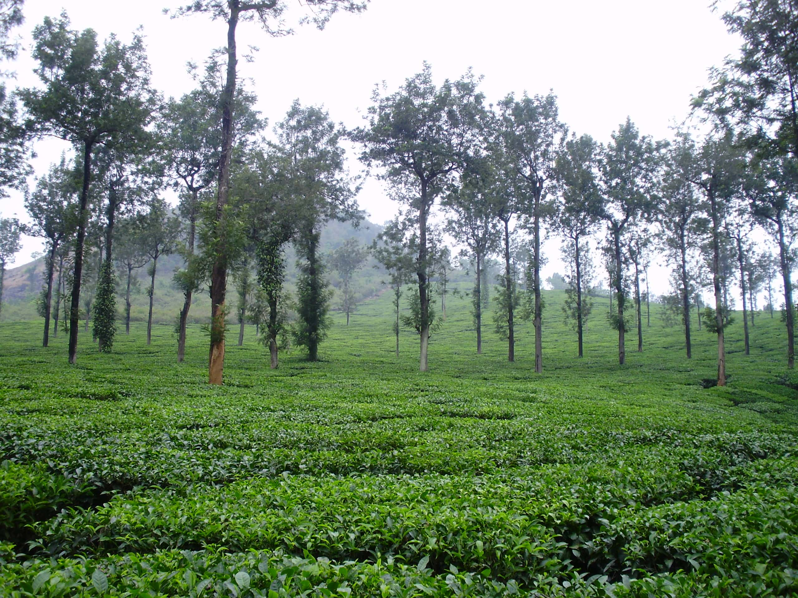
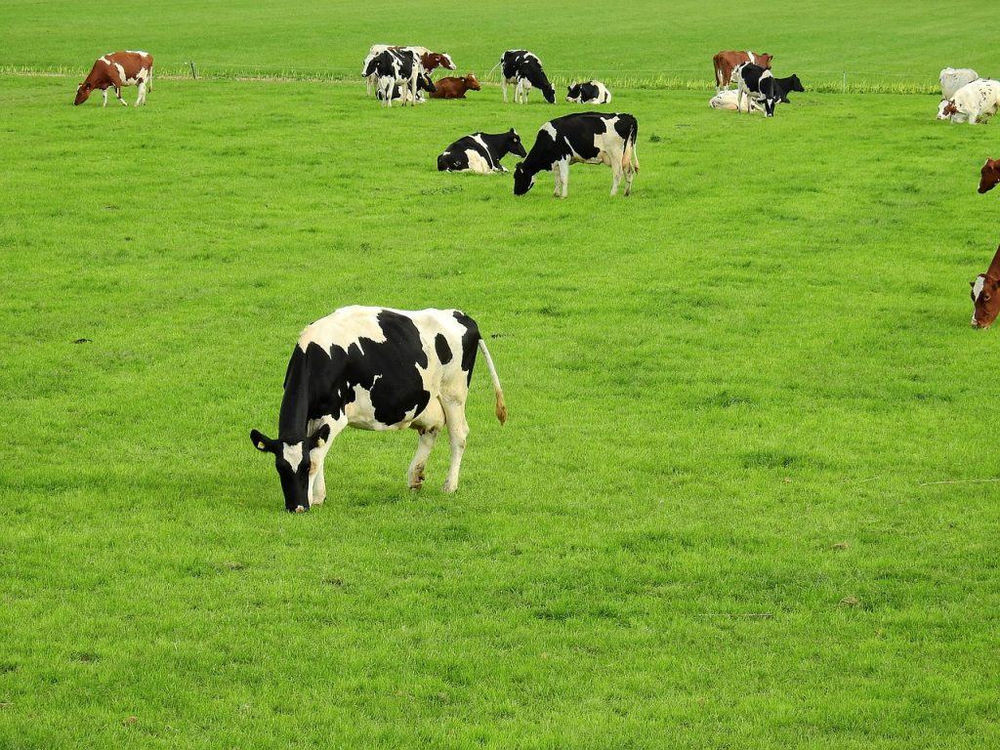
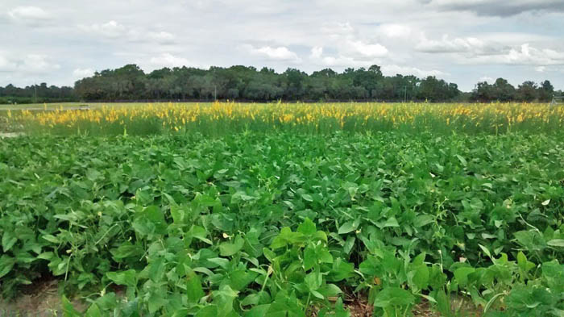
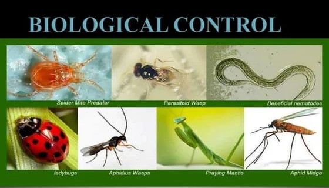
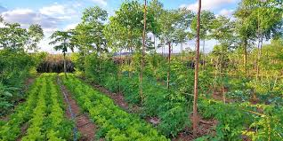
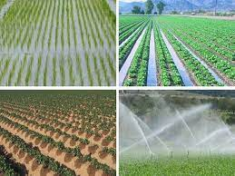
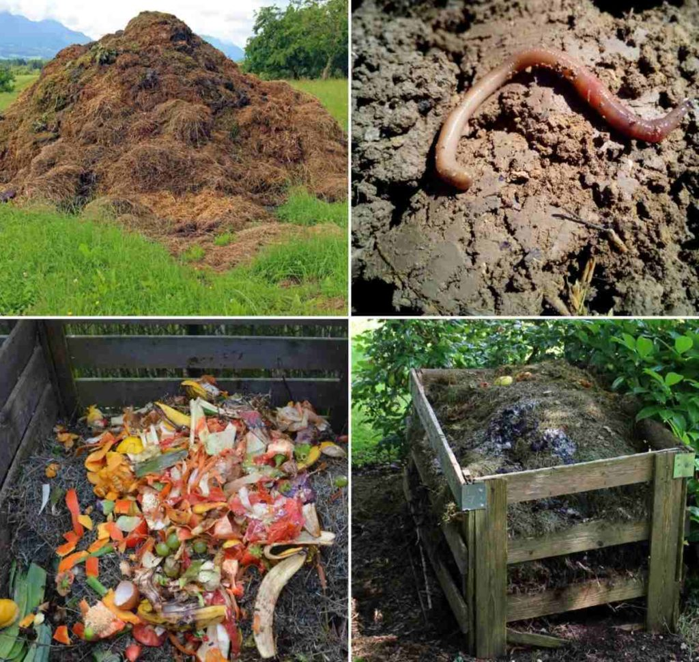

Sustainable practices
sustainable practices mean farming methods that meet current food and textile needs without compromising the ability of future generations to do the same, prioritizing environmental health, economic profitability, and social equity.
Sustainable practices in crop production aim to meet current food and fiber needs without compromising the ability of future generations to meet their needs. These practices focus on optimizing agricultural productivity while maintaining the health of ecosystems, conserving resources, and supporting social and economic well-being.
1. Crop rotation and diversification:
This age-old practice involves growing different types of crops in a sequence on the same land.
It breaks pest cycles and increases the soil moisture and fertility.

✅Types of Crops in Rotation:
★Short-term rotations (e.g., a two-year or three-year cycle) may involve alternating between one or two crops, often suited to small-scale farming or specific types of crops.
★ Long-term rotations (e.g., four or more years) can be more complex, incorporating a wider variety of crops over several seasons. Long-term rotations are particularly effective in controlling pests, diseases, and weeds, while enhancing soil health over time.
Rest Periods (Fallow): A fallow period, where no crops are planted for a season, can be beneficial in breaking pest cycles and allowing the soil to naturally replenish its nutrients. Sometimes, this can be replaced with cover crops that help prevent erosion and fix nitrogen.
★ Legumes (e.g., beans, peas, clover): These crops have the ability to fix nitrogen from the air into the soil, enriching the soil with this essential nutrient and reducing the need for synthetic nitrogen fertilizers.
★ Grains (e.g., corn, wheat, barley): These crops may require more nutrients, but they are important for breaking pest cycles and improving soil texture with their deep-root systems.
★ Root crops (e.g., carrots, potatoes, beets): Root crops help break up compacted soils, promoting better water infiltration and aeration.
Leafy vegetables (e.g., lettuce, spinach, cabbage): These crops can help cover the soil and prevent erosion while using fewer nutrients compared to grains.
✅ Benefits of Crop Rotation
★ Soil Health: Crop rotation helps avoid soil nutrient depletion. For instance, crops like legumes fix nitrogen, replenishing it for subsequent crops that need more nitrogen, such as corn. Additionally, rotating deep-rooted and shallow-rooted crops helps prevent soil compaction and encourages the breakdown of organic matter.
Pest and Disease Control: Many pests and diseases are crop-specific. By rotating crops, you break the life cycle of these pests and reduce the need for chemical pesticides. For example, rotating potatoes with a non-related crop can help control potato beetles, which thrive on potatoes.
★ Weed Management: Certain crops may have competitive growth habits that suppress weeds. For example, crops like clover or rye may be used to crowd out weeds, reducing their impact in the following year.
Improved Yield and Profitability: Crops that are rotated tend to perform better overall because they are not subjected to the same soil challenges every year. Healthy soil produces higher-quality crops, leading to better yield and potentially more sustainable profits in the long run.
★ Reduced Dependency on Fertilizers and Pesticides: Since rotation increases the natural fertility of the soil and disrupts pest cycles, farmers can reduce their reliance on chemical fertilizers and pesticides. This not only saves money but also benefits the environment.
★ Example: After growing a nutrient-consuming crop like corn, a nitrogen-fixing legume like beans can be planted to restore the soil’s balance.
2. Organic farming:
✅
Organic farming is a method of growing crops and raising livestock without using synthetic fertilizers, pesticides, or genetically modified organisms (GMOs). Instead, organic farmers rely on natural processes, such as crop rotation, composting, and biological pest control, to maintain soil health and control pests and diseases.
Prioritizing natural methods over synthetic inputs, organic farming is a holistic approach that emphasizes soil health, biodiversity, and ecological balance.

✅Key Principles of Organic Farming:
1. Use natural methods: Organic farmers use natural methods to control pests and diseases, such as introducing beneficial insects or using physical barriers.
2. Maintain soil health: Organic farmers use composting, manuring, and crop rotation to maintain soil fertility and structure.
3. Avoid synthetic inputs: Organic farmers avoid using synthetic fertilizers, pesticides, and GMOs.
4. Promote biodiversity: Organic farmers promote biodiversity by growing a diverse range of crops and maintaining ecological balance.
3. Conservation tillage:
✅This practice minimizes soil disruption, reducing soil erosion and retaining water. It allows crop residues soil nutrients and organic matter to remain on fields. This approach aims to reduce soil erosion, promote soil organic matter, and conserve water.
Key Principles of Conservation Tillage:
1. Reduced tillage: Minimize soil disturbance through reduced or no-till farming.
2. Soil cover: Maintain soil cover with crop residues, cover crops, or mulch.
3. Crop rotations: Implement diverse crop rotations to promote soil health.

✅ Types of Conservation Tillage:
1. No-till: No soil disturbance, seeds planted directly into residue.
2. Reduced-till: Limited soil disturbance, some tillage allowed.
3. Mulch-till: Soil disturbance with mulch applied to reduce erosion.
★ Example: No-till farming, a subset of conservation tillage, leaves previous crop residues untouched, fostering natural decomposition and enhancing soil quality.
4. Agroforestry:
✅Agroforestry is a land-use system that combines trees and shrubs with crops and livestock in a mutually beneficial way. This practice integrates agriculture and forestry to create a more sustainable and productive system that benefits both the environment and farmers.
Key Principles of Agroforestry:
1. Diverse plantings: Integrate trees, shrubs, and crops to create a diverse and productive system.
2.Multiple benefits: Agroforestry systems provide multiple benefits, such as improved soil health, biodiversity, and climate resilience.
3.Ecosystem services: Trees and shrubs provide ecosystem services, such as shade, windbreaks, and habitat for beneficial insects.
4. Long-term sustainability: Agroforestry systems are designed for long-term sustainability, balancing environmental, social, and economic goals.

Examples of Agroforestry Practices:
1. Coffee agroforestry: Integrating shade trees into coffee plantations.
2. Orchard agroforestry: Integrating trees into fruit orchards.
3. Windbreak agroforestry:b Planting trees as windbreaks to protect crops.
5. Sustainable livestock farming:
✅Focusing on holistic management of animal production practices, this approach ensures livestock’s well-being, reduces environmental impact, and yields healthier produce.
Key Principles of Sustainable Livestock Farming:
1. Environmental stewardship: Minimize pollution, conserve water, and promote biodiversity.
2. Animal welfare: Provide humane treatment, adequate housing, and access to pasture.
3. Economic viability: Ensure the farm is profitable and resilient.
4. Social responsibility: Promote fair labor practices, support local communities, and maintain transparency.

★ Example:
Grazing cattle on rotational pastures, allowing lands to recover, leading to healthier soil and reduced methane emissions.
6. Cover cropping:
✅Cover cropping is the practice of planting crops between crop cycles to protect and enhance the soil. These crops, known as cover crops, are not harvested for food or fiber but instead are used to improve soil health, reduce erosion, and promote biodiversity.
Types of Cover Crops:
1. Legumes (e.g., clover, beans): Fix nitrogen, improve soil fertility.
2. Grasses (e.g., rye, oats): Provide soil cover, reduce erosion.
3. Brassicas (e.g., radish, kale): Suppress weeds, improve soil health.
4. Cereals (e.g., wheat, triticale): Provide soil cover, improve soil structure.

★ Example:
Planting clover during off-seasons, prevents soil erosion, suppresses weeds, and enriches the ground with essential nutrients.
7. Biological pest control:
✅ Utilizing natural systems of predators and organisms to control pests, this approach reduces the dependency on chemical pesticides.
★ Types of Biological Pest Control:
1. Predators: Lady beetles, lacewings, and praying mantis prey on pests.
2. Parasites: Wasps and flies lay eggs inside pest bodies, where larvae feed on internal organs.
3. Pathogens: Fungi, bacteria, and viruses infect and kill pests.
4. Nematodes: Microscopic worms attack and kill pest insects.

Examples of Biological Pest Control:
1. Lady beetles controlling aphids: Lady beetles prey on aphid colonies, reducing damage to crops.
2. Trichogramma wasps controlling caterpillars: Trichogramma wasps parasitize caterpillar eggs, reducing pest populations.
3. Bacillus thuringiensis (Bt) controlling insect pests: Bt bacteria produce toxins that kill insect pests.
8. Permaculture:
✅ An integrated design philosophy that simulates patterns in nature, ensuring resources are used in a closed-loop system, minimizing waste.
Key Principles of Permaculture Farming:
1. Observe and Interact with Nature: Understand and work with natural patterns and processes.
2. Catch and Store Energy: Harvest and conserve energy through renewable sources.
3. Obtain a Yield: Produce abundant and diverse yields.
4. Apply Self-Regulation and Accept Feedback: Monitor and adapt to changing conditions.
5. Use and Value Renewable Resources and Services: Prioritize renewable resources and minimize waste.

Examples of Permaculture Practices:
Food Forests: Multi-layered plantings that mimic the structure of natural forests, providing a diverse range of food and other resources.
Guilds: Groups of plants that are planted together to support each other, such as nitrogen-fixing plants, pollinators, and pest-repelling plants.
Swales: Earthworks that capture and store rainwater, preventing erosion and improving water infiltration.
Composting: Turning organic waste into valuable soil amendments.
9. Water management:
✅ Water management refers to the planning, development, and management of water resources to ensure efficient, equitable, and sustainable use.
★ Key Components of Water Management:
1. Water Supply: Ensuring reliable access to clean water.
2. Water Conservation: Reducing water waste and promoting efficient use.
3. Water Storage: Storing water for future use through reservoirs, dams, and other infrastructure.
4. Water Distribution: Delivering water to users through pipes, canals, and other networks.
5. Wastewater Management: Collecting, treating, and disposing of wastewater.
★ Water Management Techniques:
1. Rainwater Harvesting: Collecting and storing rainwater for non-potable uses.
2. Drip Irrigation: Delivering water directly to roots, reducing evaporation and runoff.
3. Crop Selection: Choosing crops that require less water or are drought-tolerant.
4. Soil Moisture Monitoring: Measuring soil moisture to optimize irrigation.
5. Watershed Management: Managing water resources at the watershed level.

★ Example:
Implementing drip irrigation systems that provide water directly to plant roots, reducing evaporation and conserving water.
10. Waste recycling and composting:
✅ Turning organic waste into valuable compost, this process enriches the soil, reduces the need for chemical fertilizers, and minimizes waste.
Importance of Waste Recycling and Composting in Agriculture:
1. Conserves Natural Resources: Reduces the need for synthetic fertilizers and conserves water.
2. Reduces Waste: Diverts organic waste from landfills and reduces environmental pollution.
3. Improves Soil Health: Compost adds nutrients, improves soil structure, and supports beneficial microorganisms.
4. Increases Crop Yields: Compost can improve soil fertility, leading to increased crop yields.

★ Types of Waste Recycling and Composting in Agriculture:
1. Composting: Breaking down organic materials like crop residues, manure, and green waste.
2. Vermicomposting: Using worms to break down organic materials into nutrient-rich compost.
3. Anaerobic Digestion: Breaking down organic materials in the absence of oxygen to produce biogas and nutrient-rich fertilizer.
4. Bokashi Composting: Fermenting organic materials using microorganisms to produce nutrient-rich compost.